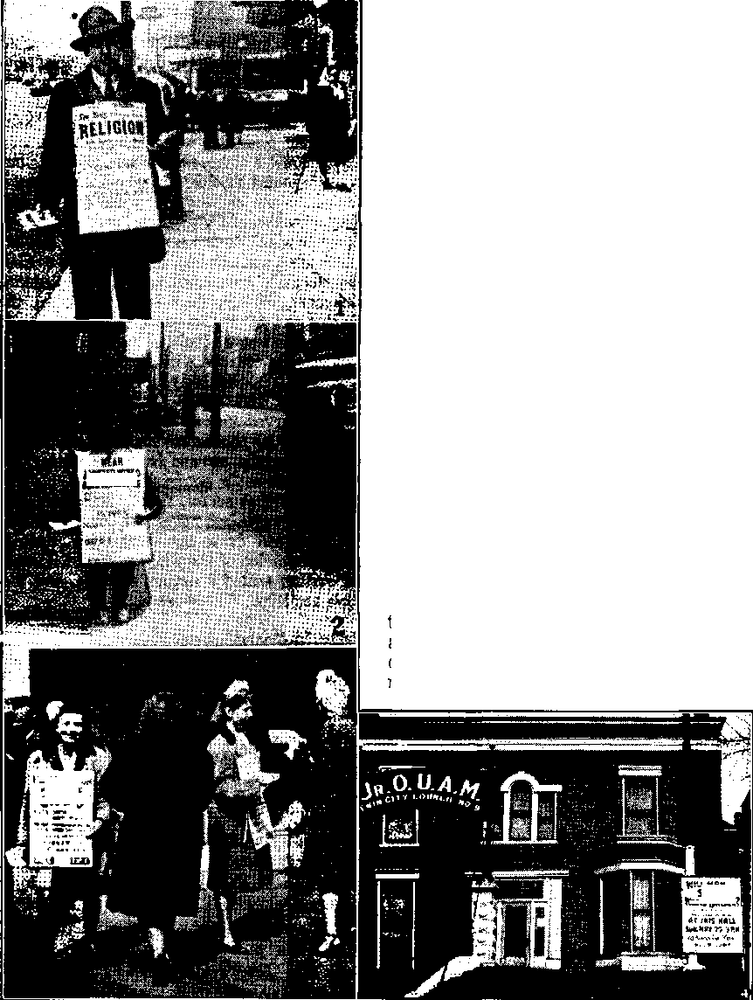
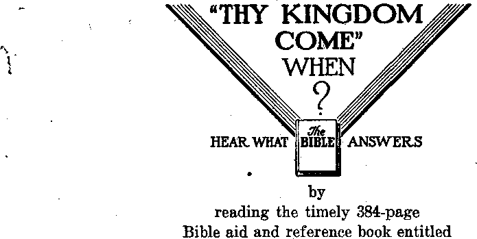

Contents
^Some of the International Cartels
Cartels Financed the Paper-Hanger
Getting Ready for World War III
Norway Under “New Order” Protection 10
Agriculture in a Lund of Rocks
April, 1940, and the “New Order”
The Closing of Oslo University
All Classes in Concentration Camps
Norwegians Torment Their Oppressors
“Thy Word Is Truth”
“Publicly, and from House to Bouse” *
Presenting “This Gospel of the Kingdom”
Published every other Wednesday by WATCHTOWER BIBLE AND TRACT SOCIETY, INC.
117 Adams St,, Brooklyn 1, N. Y„ U, S, A.
OFFICERS
President N. H. Knorr
Secretary W. E. Van Amburgh
Editor Clayton 3. Woodworth
Five Cents a Copy
JI a year In the United States 31.25 to Canada and all other countries
' NOTICE TO SUBSCRIBERS
Remittances: For your own safety, remit by postal or express money order. When coin or currency is lost In the ordinary mails, there is no redress. Remittances from countries other than those named below may be made to the Brooklyn office, but only by International postal money order, .
Receipt of a new or renewal subscription will be acknowledged only when requested. Notice of Expiration is sent with the journal one month before subscription expires. Please renew promptly to avoid loss of copies. Send change of address direct to us rather than to the post office. Your request should reach us at least two weeks before the date of issue with which It Is to take effect. Send your, old as well as the new address. Copies will not be forwarded by the post office to your new address unless extra postage is provided by you.
Published also in Greek. Portuguese, Spanish, and Ukrainian. ,
OFFICES FOR OTHER COUNTRIES
England 84 Craven Terrace, London, W. 2
Australia 2 Homebush Rd., Strathfield, N. S. W, South Africa 628 Boston House, Cape Town
Mexico Calzada Melchor Ocampo 71, Mexico, D. F. Brazil Rua Licinlo Cardoso 380, Rio de Janeiro Argentina Calle Honduras 5646-48, Buenos Aires
Entered as second-class matter at Brooklyn, N, T., under the Act of March 3, 1879.
In Brief
Falsehoods About Food and Drink
♦ The Roman Catholic Register contained a dispatch from Vatican City regarding the proposed canonization of Nicholas of Flue, Switzerland. This gentleman, a farmer with five sons and five daughters, went religious in the year 1467, and this is what next occurred, according‘to the dispatch, from Vatican City: ' ■ ■
He entered a narrow valley near his home, cutting his way up a towering mountainside to a spot designated by a seemingly supernatural sign, and built a cell that was to be his hermitage. There in the Ranft, now a national shrine, he entered upon a solitude that lasted for twenty years, in which time through a miraculous fast he partook of no food except the Eucharist, until he was taken home to God.
All right, now. The pope declares that the Roman Catholic press is “his very own voice”. How did this farmer come by this eucharistic food! Who baked it! < How much did he have at a time! How often did he eat it! What did he do in his spare time! Who got any glory out of it except'the priest who said “eeny, meeny, miney„mo” over the bread (and other things, no doubt) that Mama Nicholas probably baked for him, and the boys carried to him, after he quit working! Why didn’t the apostles make a nose dive into some such retreat! '
Continuing this investigation of fairy stories for the feeble-minded: The San Francisco Examiner has three columns respecting the religious racket operated at Graymoor, up the Hudson, It seems that there is a “holy well” up. there where a brand-new ghost of Jesus Christ filled a bucket and some pails with “holy water”. He was bearded, cultured (whatever that meant to Mulvaney the storyteller), weak, and Jewish. Not criticizing Mulvaney, but why didn’t he go ahead and stick in the usual wounds in hands, feet, forehead and side!
CONSOLATION
“And in His name shall the nations hope.”—Matthew 12:21,' A.5. V.
Volume XXVI Brooklyn, N. Y., Wednesday, May 23, 19+5 Number 670
Cartel War*Babies
A CARTEL is a combination of separate firms to maintain prices above a competitive figure; and as long as there are bankers and lawyers there will be cartels. If you prefer other terms, you can use trust, pool, syndicate, monopoly, conference, or corner, and get the same results. But the essentials are crooked bankers and crooked lawyers.
There were crooked bankers in New York city in Harding's days, and they stayed that way for twenty years. During all that time they held $10,000,000, deposited by Henry M. Blackmer, payoff man in the Teapot Dome oil swindle. It will be recalled that Albert Fall, secretary of the interior, was convicted and sentenced to prison for accepting a bribe, but Doheny, the man who bribed him, had so much money and such good “church” hookups that he landed in hades (the grave) as innocent as the day he made the first payment on the dedl. The law, in its majesty, said it was all right for Doheny to bribe, but it was all wrong for Fall to accept it. The $10,000,000 came to light in 1942.
Those who know about the Detroit First National Bank affair say that it is even worse than Teapot Dome; that the two judges who did the milking expended $4,000,000 for counsel fees and $1,250,000 for the expenses of their Washington office; that they dissipated other assets, and that the General Motors, the only common stockholder in the successive firm, cleaned up several millions.
The Chase National Bank of the city of New York is generally considered far up in the scale of Manhattan honesty, and may be even yet, but the government accused it of conspiracy in helping a refugee diamond merchant to obtain illicit access to funds with which he financed an extensive trade with Axis nations. It seems that Leonard J. R.~ Smit, diamond merchant, late of the Netherlands, has two daughters, one of whom is married to an officer in the German army. There is nothing wrong about that. But, saith the story:
Smit sought various means to continue his business in spite of these restrictions [that he must obtain government permission to withdraw funds]. In at least one instance, 1,000 carats of diamonds were mixed with the molten metal from which an order of drill bits was made. These were consigned to a purchaser in Sweden with instructions that the diamonds could be extracted by placing the drill bits in an acid bath.
Smit’s industrial diamond cartel did a business big enough that if he is found guilty he could be sentenced to an aggregate of 150 years in prison, and would have to pay fines totaling $200,000. The bank faces maximum fines of $190,000 for making several hundred thousand dollars available to Smit in a manner which the government alleges was illegal, and in a manner which other banks refused. The Chase National is good and mad that jt should be dragged into court.
Some of the International Cartels
If it is illegal for the Bendix Aviation Company, the Sperry Gyroscope Co.,Inc., the Borax Consolidated, Ltd., the General Electric Company, the Bausch & Lomb Company, or any other company, to combine in America to maintain prices above a competitive figure, then, of course, it is illegal, in principle, for them to combine in a manner to main-stain prices at a fictitious level elsewhere, find it is still worse for them to do it in such a manner as to provoke wars or to provide aid and comfort to countries with which America is at war.
Several of the foregoing companies, after the war was under way, were presented by their cartel contracts from selling aviation instruments to Britain and- Canada while supplying Germany with information for their manufacture. The Bausch & Lomb Company kept the Nazis fully informed of American production of vital military optical equipment, and in accordance with its contracts abroad it supplied information on secret military devices, including the closely-guarded American bomb sight. It refused to sell equipment to England, Erance and Latin-American countries, helped Germany to fill its orders, curtailed production of equipment by competing American firms, and took out German patents under its own name, to prevent them from seizure by the alien property custodian.
There is no question that Mussolini, a one-time Socialist, sold out to Big Business and under him Fascism was really a rule of Italy by the owners and managers of the leading enterprises of Italy. And that is why, at one time, there was such a chorus in his praise, of executives in western lands. Even Winston Churchill once praised him.
Indeed, Henry Ford charges Big Business with ruining the world. The way he put it, in a statement made at his summer lodge at Big Bay, Mich., August 11, 1944, was: »
Remember that this was not brought on by men who work for their living. It was caused by the individuals—many of them unfortunately citizens of our own country—who profit from the manufacture of munitions and explosives. ... If another Hitler comes into power after this war it will be because the warmongers have not been ousted and want another war; because this war with its terrific cost was fought solely for the benefit of the munitions makers and not for the preservation of democracy.
The Borax Cartel
Americans are so used to trusts that there was only mild amusement when it came out that the most valuable borax deposits in the world are in the United States but that they are the property of a British cartel. But some of them looked down their noses when they learned that the United States government had declared it the “most ruthless cartel3’ on record, and that, when suit against it was brought, three of the defendants were the former German ambassador to the United States, the former counselor at the German embassy at Washington, and the former German consul at New York city. This cartel was in such flourishing condition at the time it was sued that it thought nothing of paying $700,-. 000 for a small refinery threatening to operate independently, closing it down at once, dynamiting the mine and capping ih
In opening the United States Senate hearings regarding the operation of German cartels in the United States, Senator Harley M. Kilgore said that every investigation had shown that1 American industrialists had relinquished large portions of the world market in order to monopolize the domestic market through exclusive access to German patents, and that every deal of the kind had strengthened Germany and weakened the United States, adding:
If we are effectively to disarm Germany and avert another terrible world war, we must destroy Germany’s potential for aggression by destroying the power of her cartel masters. . . . The cartel masters must be brought to trial as war criminals.
Wendell Berge, assistant attorney general of the United States, defines cartels as “in essence, private governments’’ which are so designed, as to make provision for. war “and are ready to emerge as strong as ever immediately after the peace”. He says, too, that these cartels “have, indeed, obstructed and, in no small measure, thwarted the declared foreign policies of the American government, placing their own business interests above the public interests”. Showing how powerful these cartels are, and how they gain strength even in times of wholesale bloodshed, he said:
In five years of war Farben [one of the huge German cartels] and other groups have penetrated into the occupied countries and it docs not take much imagination to see that we can win a military victory and a political settlement fair to the Allies and yet permit German industrial control to continue.
Cartels Financed the Paper-Hanger
The interesting four-page weekly of George Seldes, entitled In Fact, An Antidote for Falsehood in the Daily Press, after mentioning some of the leading cartels, such as I. G. Farben-industrie, Du Ponts, General Electric, Aluminum Corporation, Standard Oil, Imperial Chemicals of Britain, etc., puts the International Telephone & Telegraph Corp, in the list, because its most important man in Germany, Baron Kurt von Schroeder, was the one who brought together, in his own home, Adolf Hitler, the pope’s chamberlain von Papen, and the steel, iron and coal barons that paid for Nazism before and after Hitler’s seizure of power. The same article in In Fact discloses how the I.T.&T. worked harmoniously with Hitler in getting World War II under way:
The Luftwaffe determined to use Spain as a training ground. Hitler sent squadron after squadron to Spain, each engaging in only one major combat. In this manner Hitler was able to have an air force to start his world war in 1939 which included 50,000 men who had had actual combat experience. Experiments wrere made by Hitler in wiping out a whole town (Guernica), in blockbusting in Barcelona, where there were 25,000 civilian casualties in one big raid) and in divebombing. Here it was that Hitler tried out various types of airplanes and where the Focke-Wulff was found to be the best airplane for future war. . . . Thus, when Hitler found the Foekc-Wulff the superior plane and began building up his luftwaffc with them, the American corporation poured money into its Nazi branch which supplied the funds to extend the Foeke-Wulff works. Our German journalist [now in America] writes: “The decision of the ITT to take an interest in the extension of the Focke-Wulff plant and in this way to build up the Luftwaffe for this war cannot have been taken without the knowledge and the agreement of the management of ITT.” The fields of France and Germany are strewn with dead American aviators, victims of the Nazi superior plane, the Focke-Wulff, built with American money.
Getting Ready for World War III
The CIO News, November 6, 1944, contained an article by C. W, Fowler entitled “Cartels Used to Pave Way for Nazi Conquest; Now Planning World War III”. In his story he tells about the drug cartel which is dominated by the German cartel I. G. Farben. It seems that this particular gang had a line of plastics which sold for 85 cents a pound. Dentists who had been paying $45.00 a pound for the same material under another name got to using the commercial product, whereupon the Farben outfit put a bitter substance in the commercial product that made it useless for dentures. It thus appeareth how easy it is to make money. Ail that is necessary is to belong to the brotherhood of international gougers whose motto always is, “Money, first, last, and all the time.”
As late as January 18, 1945, the Department of Justice filed suits against the General Electric Company, and its international subsidiary, charging it with maintaining international cartel agreements with companies in Japan, Germany, and four other foreign countries. If could be that nobody has yet informed the General Electric about the war. Or couldn’t it?
’’ Both Labor (Washington) and Labor \Action (New York) are extremely caustic and sarcastic about the convention of the National Association of Manufacturers and the United States Chamber of Commerce, held at Rye, N.Y., at which those gentlemen, working behind closed doors, were trying to perform the work alluded to in the first paragraph of this article. The Baltimore Sun reporter who tried to cover their conference thought that they might “actually be sowing the seeds of another World War” while No. 2 was still on the carpet. The conference was held late in November, 1944. It apparently followed almost immediately the Senate’s Kilgore Committee on Cartels from which the following quotations, which speak for themselves, are taken:
The extensive testimony before this committee and the great mass of testimony adduced by other congressional committees have adduced beyond question that the international cartel system has been subversive of political security, full production and employment, and the expansion of world trade. ■
The emergence of consolidated and powerful interests in American, British and French industry made it possible for Germany’* cartel groups to strike a series of bargains and cartel agreements which resulted in virtual elimination of competition in vast segments of world industry while at the same time fortifying the spheres of influence which the German groups had regained.
A cartel system dominated by American or British interests will eventually produce the same undesirable results as one exploited by the Germans. It would jeopardize peace and jobs in the postwar world and soon bring us face to face with the possibility of a third and even more destructive war.
The committee mentioned that under the Farbenindustrie cartel are some such American giants as Aluminum Corporation of America, American Cyanamid, various Du Pont interests, the Standard Oil group, the Mellon-owned Koppers Corporation, National Lead, Procter & Gamble, Union Carbide and Carbon, Winthrop Chemical, General Dyestuff, General Motors, General Tire, Goodyear Tire and Rubber, and Grasselli Chemical.
Domestic Cartels; That Is, “Trusts”
If it is true, as the government suggests, that a cartel and a trust are one and the same thing, then both are war promoters, and it is good to take a look at them. On August 23,1944, the government brought suit against the American Association of Railroad?, its officers and directors; J. P. Morgan & Co., fortyseven railroads (including the Southern, Alton, Burlington, Union Pacific and Katy systems) and many other persons besides the executives of such systems, alleging that they had by collusive and illegal action deprived the West of low competitive rates; had retarded radio and air-conditioning on the trains; had prevented the' construction of necessary spur tracks; had deliberately delayed the delivery of perishable products; had conspired with the oil companies and with motor and water carriers to boost rates, and had double-crossed the trucking industry by concerted action in the state legislatures. This might suggest to some why so many men are desirous of getting seats in the state legislatures.
Though Kuhn, Loeb & Company are among the defendants, yet it is especially of the J. P. Morgan company that the charge is made that they “have taken part in the collusive fixing of non-competitive rates; and that they have collaborated through their representatives on the committee of directors to coerce officials and defendant railroads from reducing rates and improving services and facilities of the western railroads”. No doubt some more lecturers on hon-
esty are in training in the Morgan establishment. .
For the Morgan company to profit at the expense of the rest of the American people, it should make a deal with the American Legion, the arrangement being so much un-Americanism for so much cash on the barrelhead. It is a good many years now since America went vegetarian over night on account of disclosures then made regarding unsanitary conditions in the meat-packing establishments. Later, the meat-packers put up $100,000 to help organize the American Legion, saying, (fWe are all interested in the Legion, the results it will obtain, and the ultimate effect in helping to offset radicalism.” Ever since then the American Legion has Mood like a stone wall behind the Big Business crowd, and resembled the wall in intelligence. It has earned and received the reputation of being the most reactionary body of men in the United States, the most un-American.
Most Legion commanders have been corporation men; several of them''have come out for Fascism; it became America’s greatest strikebreaking force; it has never said one word against Fascism; it has been America’s No. 1 enemy of civil liberties; when one Legion post published a pamphlet in favor of real Americanism, the Legion voted to suppress it; Legion statistics show that it is composed of the wealthier element and few workingmen; the Legion has approved a proposal to accept $20,000,000 from labor-hating corporations making up the National Association of Manufacturers, to boost the American way of doing things (which resulted in the collapse of 1929 and the 13,000,000 unemployed in 1933).
Religion Could Be Worked In
The National Association of Manufacturers has a committee on co-operation with the churches. The chairman of this committee is Jasper E. Crane, vicepresident of the Du Pont corporation, Wilmington, Del.; and, as the Du Ponts are listed as part of the Farbenindustrie cartel, the whole thing could be worked together. The right procedure would be for the lawyers and bankers of the Big Business boys to get together and decide what illegal thing they wish to put across; then get some religious gent to pray for it (and prayers for anything under the sun can be had for as little as $5 or $10 a throw), and then get the American Legion to attack with mob violence anybody that gets in the way, and the result is all that can be desired, or maybe more.
How religion can be worked into any business row was shown as early as July, 1902, when Pennsylvania militia fired on a march of pickets near Shenandoah, Pa. A stockholder of the Philadelphia and Reading Railway wrote to George Baer, president of the Reading company, making some protest, and received a reply in which is historically set down this interesting proposition:
The rights and interests of the laboring man will be protected and cared for, not by the labor agitators, but by the Christian gentlemen to whom God has given control of the property rights of the country and upon the successful management of which so much depends.
On November 16, 1944, the government indicted eighteen concerns, including Carnegie-Illinois Steel Corporation, Bethlehem Steel Company, American Rolling Mill Company, Timken Roller Bearing Company, etc., for engaging “in an unlawful conspiracy arbitrarily to fix and maintain uniform and non-competitive prices, terms and conditions for the sale of stainless steel finished products sold in the United States”. “Conviction would involve a maximum penalty of $5,000 fine and one year’s imprisonment in each of two anti-trust charges.” Looks like more work for somebody willing to sell a $5 or $10 prayer, but it isn’t exactly clear how the American Legion could muscle in.
But take it in the case of the American Stores Company, operating 2,099 retail stores, accused by the government of a 250,000 red ration point shortage, “by far the largest that has been uncovered,” how would one divide that up between ''■the crooked lawyers, crooked bankers, i crooked Legionnaires, and crooked religionists? It is all very confusing.
Dishonesty
Dishonesty is widespread. It isn’t only the clergy that are crooked (about the ' “eternal torture” and “purgatory” rackets, for which they well know there is not a shadow of excuse), but the members of their flocks have caught the fever. At a St. Louis airport the mayor of the city and the president and vice-president of the Robertson Aircraft Company were killed, along with seven other persons, when a wing strut collapsed which had a thickness of only one-sixth of that called for in the specifications. The army inspectors that OK’d the strut were suspended. In fact and in effect they are murderers.
At Cleveland, Ohio, the National Bronze and Aluminum Foundry Company and seven of its top officials were • indicted and charged with conspiracy with twenty-one company employees for welding and plugging defective castings, giving them new numbers and otherwise conspiring to defraud the government. The defective castings were usually welded at night. They were intended to be used in Rolls Royce engines. The maximum penalty for those found guilty would be 242 years in prison and fines of $90,000. The twenty-one employees were merely cited, but not included in the indictment.
Anaconda Copper
The anaconda, 30 feet long, is the biggest snake in the world. It spends most of its time submerged, with only its head partly sticking out. An oblique streak is found on each side between the eyes. For an early history of the Anaconda Copper Mining Company read Frenzied Finance, written by Thomas W. Lawson, in 1904.
Senator James E. Murray of Montana, in a statement October 22,1943,"before the United States Senate Committee on Banking and Currency, said of this company which Lawson made famous :
The company has been engaged in acts of wholesale fraud in the sale of wire and cable of such a defective nature as to endanger the lives of our boys on the war fronts.
Within sixty days thereafter came the trial at Pawtucket, R.I., which Senator Murray evidently knew was to occur. The story said:
Workers at the plant and army inspectors revealed that company bosses had deliberately instructed employes to pass defective wire for the army signal forces, even though that might have caused the loss of lives of American soldiers. The testimony showed that whenever inspectors weren’t looking, tags for “approved” wire were switched to untested or substandard wire. Other methods were also used, witnesses said, to slip over faulty materials, from which the company profited.
Four of the minor plant officials were fined and given jail terms, and the company itself had to pay a $10,000 fine, but as none of the top men in the company were indicted, they escaped punishment. The judge on the bench said: .
The evidence discloses that this corporation set out from the very beginning to scheme to get around and defraud the United States.
Thomas W. Lawson would have said that was just what might have been expected of a corporation so appropriately named. .
A Battle of Steel
This world war, like the other, is, after all, a battle of steel, and Uncle Sam can beat the world when it comes to making steel and lots of it, and making it in a hurry. Also, and this isn’t so nice, if Japan had not had Uncle Sam’s steel scrap it would be out of the war by now. Much of this scrap was sent to Japan by fast passenger ships after the United States embassy in Tokyo had warned the state department what was coming. Uncle Sam is now producing alone much more steel than all the Axis powers put together. Some of it is not so good. Said Labor:
Evidence before the Truman committee revealed the startling fact that the United States Steel Corporation had palmed off defective plates for merchant ships by falsifying records and tests. Officials of the corporation admitted that at least 28,000 tons of defective material had been supplied the government. Part of the steel went into the construction of a tanker at the Portland (Oregon) yards of Henry J. Kaiser, The'vessel broke in two and sank at its mooring dock. Immediately officials of the Maritime Commission, dominated by reactionary Admiral Emory Land, blamed the disaster on poor workmanship, contending that the Kaiser yard had pursued bad welding methods. Kaiser showed that the ship did not split at the welded seams, but between them. The House Committee on Merchant Marine investigated and confirmed Kaiser’s statement.
Then the Truman committee took a hand, brought before it officials of Big Steel, and learned from their own lips the astounding story of “plain cheating of the government”, as Senator Harry S. Truman (Dem., Mo.) described what had taken place. J, Lester Perry, president of Carnegie-Illinois Steel Corporation, admitted that company inspectors had been instructed by superiors to falsify tests, so that defective plates could be passed on to the government.
The $ Standard of SucceSS
The United States monetary unit is indicated by the dollar sign, which is a U with an 8 implanted over it; and some are mean enough to say that in America everything is measured on that basis, but it isn’t quite true. On December 31, 1943, the assets of some of the concerns that are legitimately members of the
Billion-Dollar Club were as follows:
American Tel. & Tel. Co. $6,313,000,000
Pennsylvania R.R. Standard Oil Co. (N. J.) General Motors Cor.
Southern Pacific System U. S. Steel Corp.
New York Central R. R, Atchison, Topeka &
Santa Fe R. B.
Union Pacific R. R. Consolidated Edison Co. Baltimore & Ohio R. R. Commonwealth &
2,812,000,000
2,328,000,000
2,265,000,000
2,237,000,000
2,106,000,000
2,102,000,000
1,561,000,000
1,456,000,000
1,421,000,000
1,323,000,000
Southern System
E. I. du Pont de Nemours Bethlehem Steel Corp. Soeony-Vacuum Oil Co. Ford Motor Co.
1,202,000,000
1,115,000,000
1,045,000,000
1,030,000,000
1,009,000,000
The deposits in the big banks make an impressive showing also. On December 31, 1944, the banks that had over a billion on deposit were,
Chase National
(New York) $4,835,219,258
Bk of Am NT & SA
(San Francisco) ■ 4,340,539,688
National City Bank
(New York) 4,205,072,012
Guaranty Trust Co.
(New York) 3,441,036,641
Contin’l Ill NB & T Co. ‘
(Chicago) 2,447,740,086
FirstNat’lBank (Chicago) 2,102,621,634 Manufacturers Trust Co.
(New York) 1,991,382,142
Cent Hanover Bk & Tr Co.
(New York) 1,800,909,711
Bankers Trust Co. .
(New York) 1,726,073,557
Chemical Bank & Trust Co.
(New York)
First Nat’l Bank (Boston)
Security-First Nat’l Bank
(Los Angeles)
National Bk of Detroit
(Detroit)
Irving Trust Co.
(New York)
Bank of the Manhat Co.
(New York)
1,398,753,587
1,394,132,248
1,340,701,440
1,246,007,534
1,141,041,213
1,104,705,889
The listing of America’s greatest corporations and its greatest banks does not mean that all of these are involved in cartels, though manifestly some of them have been. There will be further studies of the activities of some of the great financiers in future issues, as space may be available.
1VT0RWAY, “Land of the Midnight -Ll Sun,” is at the moment under the “protection” of the pope and the paperhanger, but, before taking note of some of the reasons why the “new order” of _ these would-be rulers of the earth is not acceptable to Norsemen, it seems proper to present some underlying facts about the country as a whole.
Spitsbergen, half the size of New York state, with its coal deposits estimated at 9,000,000,000 tons, is theoretically a part of Norway. It stretches to within 700 miles of the north pole. Before the war the mines were being worked, but these islands, 650 miles north of North cape, are not now inhabited. At Spitsbergen the longest summer day is four months long and the longest winter night is of equal length. More than a hundred kinds of flowering plants grow in Spitsbergen. Seafowl are so plentiful that at times they literally darken the air. Foxes, bears, reindeer, walruses and seals abound.
Norway proper is of the shape of a huge dog, with its head to the south and its tail to the northeast, over a thousand miles away. The southern cape, called The Naze (Norwegian for nose) is in the same latitude as Juneau, Alaska. There are some railways and some expensive highways, one of them recently built by the Germans, but for the most part Norway must ever depend upon the sea for transportation.
The northern lands of Alaska, British Columbia, Maine, Nova Scotia, Newfoundland, Labrador, Greenland, Scotland, and especially Norway, are bordered by submerged mountain valleys ' which in Scotland are called “firths” or “friths", and in Norway, “fjords.”
There are numerous peaks and ridges many thousands of feet in height boldly-■ jutting out into the ocean. The fjords extend far inward, sometimes as far as a hundred miles, Hardanger fjord, 1,000 feet deep, is flanked by cliffs 6,000 feet high. Numerous torrents fall over these cliffs, and when the brinks are covered with mists, as is often the case, these waterfalls, seen from the ships in the fjords, have the appearance of falling from the sky.
The Lofoten Fishing Grounds
The great fishing ground of Norway is off the Lofoten islands, well above the Arctic circle, due west of the northern tip of Sweden. Here the tides wrestle with one another as great volumes of water seek to flow in opposite directions, and twice each day the innocent-looking fjords become channels of death.
In calm weather, and between tides, a small boat can navigate safely, but during the spring tides, and when natural currents are whipped up by heavy western gales, vortices are created in which no ship can survive. Not only have boats actually been swallowed up in these whirlpools, but even whales caught in them have been whirled around until they were dead.
The departure of mail boats is very carefully regulated so as to take full advantage of the tides, but, even when care is taken, many lives are sacrificed. Nine-tenths of Norway’s sparse population live along the coast, or near the fjords, or on the small islands called skerries, of which there are about twelve hundred occupied. In many places these skerries form a natural breakwater and render navigation of near-by fjords comparatively safe and delightful.
As the country is so far north, and is so mountainous, much of Norway is under snow the year round. The line of perpetual snow is at 3j000 feet elevation in the north, and at 5,000 feet in the south. Even on some of the farm lands there are snowdrifts in the pastures as late as June 27, with the next season’s frosts only eight weeks away.
When Summer Does Arrive
When summer does arrive in Norway, it keeps right on coming without any letup; for most of the time the sun continues to pour its light- and life-giving rays upon vegetation and it grows very rapidly. Flowers and fruits grow of unusual size and fragrance.
There is an abundance of moisture; seventy inches of fain on the western coast, and from ten to twelve inches on the mountains that border Sweden. The mountain slopes are therefore well clothed with oak, beech and magnificent pine forests, while willows and birches extend almost to the snow line. Wild cranberries, raspberries, blueberries and strawberries abound. Cherries, currants and gooseberries excel.
Songbirds are plentiful, seafowl breed by the million in the cliffs, and bears, foxes, wolves, lynxes, hares and lemmings find shelter in the forests. All life accommodates itself to the nocturnal sun; the poultry goes to roost while the sun hangs high in the southwestern heavens, and a rooster wakes up to find the sun shining him full in the face.
Norsemen were the discoverers of Greenland and of America. Columbus knew of these discoveries and followed in their wake. One of the viking boats was recently discovered, buried in blue clay. The keel is 103 feet long, the solid trunk of an oak tree. The vessel is sixteen feet in width.
The United States is glad to have as citizens about 400,000 persons that were born in Norway. There is not a more peace-loving or peaceable people in the world than the Norwegians of the twentieth century. They are very democratic ' and industrious, care little for luxuries, and are among the most progressive and enlightened of mankind. Children between seven and fourteen must be in school. Women voted thirteen years before they did in the United States. All sects are allowed to preach, teach and hold meetings, except Jesuits.
Agriculture in a hand of Rocks
Norway is a land of rocks. Its stone walls are. the thickest and the highest to be found. Travelers report seeing women cutting hay upon the sides of mountains so steep that they have to be anchored with ropes around their waists to keep them from falling over the precipices. Potato patches are often at an angle of 45 degrees. It is common for a farmer to have a waterfall, on his premises, and cliffs 2,000 to 4,000 feet high in lieu of fences.
The buildings on many of the farms are seven or eight hundred years old. Anything built within a century is considered modern. The eldest son inherits the father’s farm, but must make compensation to the other heirs. The farms are not cut up for inheritance purposes.
Farm buildings are all united with the house, as in the Netherlands and in Maine, U.S.A. This is almost necessary where the winter is so long and cold as in Norway, but in case of a fire it means the loss of everything. Potatoes and other root crops are stored under the house, where they will not be frozen. There are cellars under the stables, where the manure is housed so that it will not lose its strength by exposure to the weather. The woodshed adjoins the kitchen.
The stabbur, or storehouse, is two stories high, and in peace times it contained the winter’s supply of provisions for the family, such as flour (often from Minneapolis, U.S.A.), fish, dried meat, pork, bread (which is baked only once or twice a year), butter, cheese, and extra clothing and bedding. The storehouse is protected from invasion by rats.
Grain, instead of being stacked, is hung over wooden frames to dry. In some places snowsheds are erected to catch the drifts in the meadows and r grain fields, to prevent the snow from piling up in one place. It is often neces-* sary to feed the cattle in the barns until the middle of June.
The farms are very small and very hard to work. The average Norwegian farm has less than eight acres, of arable . land. The season is short. Mosquitoes are most rapacious, as in Alaska.
Norway had a revolving fund loaned to young farmers at 3 percent for a term of 25 years. The loans, made to young couples just starting in life, enabled them to acquire farms and improve themselves and the state. Every year Norway used to plant 15,000,000 new trees to take the place of the ones cut down.
All Scandinavia, including Norway, is socially-minded rather than dollar-minded. Nobody is left sick and destitute. Sixteen hundred skilled, government-trained midwives give or did give close attention to the arrival of new Norwegians. Sick clubs, for the mutual protection of the poor, have been in operation for hundreds of years. Prohibition was tried, hut was givfen up.
April, 1940, and the “New Order”
The .Jesuits planned to grab the world (in 1940). This was clearly disclosed in the article '‘What Is Fascism?” which appeared as the leading article of this magazine (then called The Golden Age) in the three issues, numbers 417, 418 and 419, dated September 11, September 25, and October 9, 1935. This article was so important that it was republished in full in number 422, issue of November 20, 1935, and it has repeatedly been mentioned since then, because everything that David Wilkie, the British writer, forecast in that article has taken place and is now a matter of history and of horror to all good men. In full harmony with that story, Norway was invaded for the Jesuits, and by the Jesuit-trained Hitler, April 9, 1940. On that date the Nazis moved in to “protect” the Jesuit -hating Norwegians from running their own country in their own way.
It costs a lot of money for a country to be protected by the Jesuit “New Order”. A Norwegian lawyer, Annaeus Schoedt, lecturing in Stockholm, stated that in the first four years of Nazi occupancy the wealth of Norway had been reduced from about 15,000,000,000 kroner to about 10,000,000,000 kroner ($2,500,000,000). Meantime, by various artifices, the domestic state debt w’as increased from 1,500,000,000 kroner to 5,400,000,000 kroner. This work is done in a most efficient manner. In the first year of the “protection” the Bank of Norway was relieved of about 2,000,000,000 kroner and after three years the daily transfer of funds to the Nazi cause was 5,000,000 to 6,000,000 kroner. It all summed up to the fact that, for having the “new order” come in and take charge of their affairs, the hard-working Norwegians in a single year were robbed of four times as much as the entire governmental budget for one year had previously been.
The “new order” never hesitates to express its view that it is fully authorized to murder anybody that disagrees with it. The literature of the Hierarchy is filled with perfectly clear statements to that effect. The Nazis do the best they can to show the same spirit. In Norway, when they shoot anybody they not only compel the Norwegian insurance companies to pay them the amounts of the ’policies, but, also, to the relatives of the executed they send bills of expenses incurred in the cremation and burial of the slain.
Would Have Taken Merchant Marine
When the “new order” protects a man by breaking in his front door, taking away his gun, blowing up his safe, and taking his carpets, clothing and food, it expects, of course, that the man will show his gratitude by handing over his business intact. So one of the first acts of the Nazis, after they seized Norway, was to demand the handing over to them of the great Norwegian merchant marine. But the Norsemen said No, and they had a reason.
12
consolatson
In the year 1939 the gross tonnage of the four greatest merchant marine powers in the world were:
Great Britain 21,215,000
United States 12,003,000
Japan 5,630,000
Norway 4,835,000
This tonnage would have been very useful in the invasion of Britain. But within a few minutes after the Nazi-controlled radio at Oslo had ordered all Norwegian ships to make for her home ports, the Norwegian-controlled radio at London ordered those same ships to report to their government in exile. And every ship on every one of the seven seas followed the London instructions, without a single exception.
And this is a good place to mention that in the twelve months after France’s f collapse, that same Norwegian merchant marine carried to England 50 percent of that nation’s supply of oil and gasoline; also, that those same ships aided in the evacuations of Dunkirk and Crete; and also, that in the first three years of the attempted Pacelli-Hitler “new order” three hundred of those same ships were sunk and two thousand of their brave seamen perished.
This loss of more than half of its mer-. chant marine means more to Norway than it could mean to any other land, for ' the reason that the country does more trade, i.e., has more exports and imports, per head of the-population, than any other in the world.
The taking away of all (heir shotguns was not of any great benefit to the “protected” Norwegians. Shortly, it was noticed that bears, wolves, foxes and wolverines were becoming increasingly numerous. The wolves were spreading south-ward into the more closely inhabited parts. One farmer lost 35 sheep in a single night; another, 17. Mountain pastures, always used previously in the summer, became no longer safe. And an ominous fact was that these wild animals, once fearful of man, seemed no longer to hold him. in awe.
The Closing of Oslo University
Before the “new order” grabbed the country, university education was free in Norway, and there were 4,000 students enrolled at the University of Norway, in Oslo. The Nazis complained that this was a center of liberty in the land, which was probably true, and decided to close it. The 1,000 young women students were sent home, but told to report periodically to the police. The 3,000 young men were to have been deported, but there was a leak somewhere; only 1,356 could be found. Of these, 300 turned out to be pro-Nazis, and when the time of deportation to Germany arrived only 650 liberty-lovers were shipped. Those familiar with the facts admit that of 90 professors only 2 joined the Nazi party, and that the students boycotted their lectures.
Of the 1,644 students that could not be located many turned up in Sweden, The Swedish government and the Nazi government had some sharp exchanges about these. Swedish newspapers denounced the whole proceedings as cruel and cowardly. Others (364 in two days) escaped in little fishing vessels across the storm-tossed, submarine-infested North sea to the Shetland islands off the British coast.
Still others, to escape the German labor service conscription, which, after all, was what was at the bottom of the whole incident, fled to the mountains of their native land. There, working in groups, they have built their own shelters in duplicate, so that if one is seized they can flee to the other. And they manage to keep in touch with the nearest populated place, so as to know what goes on.
Must Serve the “War Effort”
Having seized the country, the Nazi '’’authorities are perfectly frank about it ghat all men of the ages 18-55 and all women of the ages 21-40 must, as they put it, “serve the war effort.” News of Norway, published at 3516 Massachusetts Avenue, Washington 7, D.C., gives some facts on this from which the following is condensed:
About 100 young men were sent by employment officers or lured by advertisements to a “school for chauffeurs” at Svelvik. The school was supposed to be “entirely Norwegian”; enrollment’ was wholly voluntary; graduates would be given 8-hour-a-day jobs in Norway; they would not wear uniforms; they could use their spare time as they wished while learning.
It worked out that the school was under German military’ command; the students had to wear black uniforms, showing German eagle; they had to salute all Germans in uniform; then it was disclosed that they were scheduled to go to the Russian front. If any balked, the German pistols were drawn.
The same periodical, News of Norway (sent free for the asking, from the address stated), went on to explain:
Hollanders, Danes, Frenchmen and others are being sent to Norway, Norwegians to Germany, others to the Eastern Front. Great masses of people are being transferred from one part of the continent to another; young people are being summoned and sent away; older people are put at work at which they are not accustomed, similarly7 women. To a large extent, all this is happening without consideration for gain or loss of labor from a technical point of view. The main object is that customary social connections and conditions are dissolved, that young people of military age come under control and that a terrifying sense of insecurity is introduced into the lives of the people.
Norwegians in Open Resistance
The resisting Norwegians are up against it. One out of every 200 persons in the land is in a concentration camp, and of these 15,000 originally incarcerated one in every 60 has been executed. The Norwegian Labor Party at one time had 37 daily newspapers in operation. All of these were suspended and their printing presses were shipped to Germany.
They resent the shifting around pf the populations. Of the 300,000 Germans in Norway about half are soldiers and half civilians. Thtyre are 100,000 other foreigners and, all together, their numbers are equivalent to an increase in population of one person in every other house.
When the country was seized, the Germans took it all, including Kirkenes, far above the Arctic circle, away around on the edge of Russia, where the three countries Norway, Finland and Russia come together on the shores of the Arctic ocean. With characteristic industry and efficiency, and at great expense, the Germans built highways all the way up through this country. In two places it was necessary for the main highway to cross wide fjords by7 ferry. In winter the « parts of the highway built on high ground are completely blocked by snow and the only communication is by sea.
October 21, 1944, the Nazis decided to abandon this far northern region. At Kirkenes, they made the rounds of all the houses, poured oil over them, and set them afire. The brick buildings were blown up with dynamite. The people were not allowed to take their belongings out of their homes. All the fishing vessels and small boats were also destroyed, thus depriving the people of their chief means of subsistence.
At other places en route back to Norway proper (in the same latitude as the most northern part of Alaska) they exterminated the cattle and other domestic animals, put the torch to towns, hamlets and farmhouses, destroyed or carried away the foodstuffs, and either left the inhabitants, men, women and children, without food or shelter, or crowded them into small boats under such conditions that many died from exposure or exhaustion. Moreover, such of them as had the courage to remain were face to face with no railroads, no roads, and bitter cold, with the long Arctic winter night next on the calendar.
“News of Norway explains that on one of the evacuation trips from this far northern country 1,800 unhappy Norwegians were jammed into the hold of a ship where there was nothing to sit or lie on except cannon and ammunition cases. The hatches were closed; the stench became unendurable; on arrival at Narvik more than half of the passengers were suffering from dysentery and only a few were able to walk. Four babies were born en route, but one of the mothers and two of the babies died and their bodies were thrown into the sea.
All Classes in Concentration Camps
Frederick C. Crawford, a former president of the National Association of Manufacturers, went on record as alleging that the underground of Norway and other countries is composed largely of Communists, young people, and underworld ex-convicts, whereupon the director of the Norwegian Information Service, New York, also went on record that German prisons and concentration camps reveal an excellent cross-section of all Norway, including Protestant clergy, members of the faculties of universities, teachers, doctors, lawyers, shipowners, businessmen, officers of what was once the Norwegian army, intellectuals of all groups, factory workers, farmers, office workers, and fishermen. It seems not to have occurred to Mr. Crawford that anybody has any rights in this world unless he has large financial interests at stake. He should avoid sticking out his neck in wartime.
Norwegian resistance has been carried on in the open. The 300,000 young men in sports organizations refused pointblank to have anything to do with Nazi-sponsored sports activities. The Norwegian Supreme Court resigned in a body. The teachers refused to join the new teachers7 association; 2,000 of them were arrested and thrown into concentration camps; schools were suspended for several weeks.
Living conditions are very hard. Grownups may have half a pint of skimmed milk only every eighth or tenth day. After waiting four months for, any meat there was a distribution of frozen horse meat. Bread supplied at the rate of five slices per day per person had very little food value. Clothing stores were empty. The finest of them were reduced to advertising “turned clothes”, i.e., turning outside what had been inside, and thus throwing breast pockets on the right side. When soles of shoes wore out, they could be replaced only with wooden soles,
Gestapo Service and Auxiliaries
The Germans confiscated all radios. They barred all Danish and Swedish papers. They entangled 35,000 Norwegians in their" fake labor organizations. They put the cities in complete darkness. There were no theaters and no restaurants. The finest furs, $10,000,000 worth of them, were sent by the overlords to women friends in Germany. Winter heat of homes is kept down to 45 or 50 degrees. No baths are allowed. But Germans may have all the heart they want.
The Gestapo service provided for other parts of Europe is also provided for Norway. Prisoners are given violent blows in the face. They are choked with their neckties until they faint. They are kicked and then hit all over their prostrate bodies with truncheons made of iron and covered with rubber. Their legs are bent and twisted, and then the toes are twisted separately; their stomachs
are jumped on, and they are dragged downstairs by the feet, with their heads bumping on every step.
Thorleif Braend, of Rena, was placed in the yard outside the office of the local Nazi sheriff and forced to run, in circles s while the officers of the law amused I themselves by shooting at his feet. Later, one by one, all his fingernails were pulled out, each finger broken, and both his legs were shattered. He died of his injuries after being taken to a hospital at Elverum.
- The local quislings are sitting on top of the world, and Quisling himself, like his paper-hanger boss, spends much of his time observing the stars, i.e., immersed in astrology, which is demonism.
Because he refused to surrender his seat on a streetcar to a German officer, a Norwegian worker was sentenced to two years in prison; fourteen fellow passengers who testified that the officer had conducted himself in a brutal and offensive manner were each sentenced to one month in prison.
Norwegians Torment Their Oppressors
The refusal of Norwegians to sit beside Germans or quislings at length compelled the Oslo authorities to put up placards in the cars warning the public that if they stand when seats are available they will be put off at the next stop, and punished to boot; and if the conductor fails to see that this is done he also will be punished.
A Norwegian was believed to have an illegal radio receiving set in his home. The Gestapo staged a night raid, intending to shoot him on the spot, but a neighbor shot and killed the three of them in their tracks. The radio owner and his wife fled to Sweden, with their baby, and, after eight days of incredible suffering, finally crossed the mountains in safety and reached their destination.
The Norwegians had a popular weekly magazine styled the Allers Familiejour-nal, and just for one issue the Nazi representative in its office was absent
16
through illness. The magazine suddenly appeared with a cover illustration showing a girl clad in a blue bathing suit adorned with white stars. The Nazi authorities decided, correctly no 'doubt, that this was an attempt to reproduce the American colors, and they not only suspended the publication but arrested the responsible managing editor and artist, and the 70 printing plant employees were thrown out of work,
A little Norwegian boy now in Scotland tells of the time when the Gestapo came in to question his mother. When they threatened her the little fellow came out from under the table. The officer thought he had just come into the room, caught him by the arm, and asked him the same questions he had just been asking of his mother. Of course, the little fellow gave him the same answer, and so the officer went away.
At Levanger, near Trondheim, a Nazi-named pastor, for the first time in weeks, found himself facing a full-sized congregation. But the moment he got up and began to preach, the whole congregation started running for the doors. That Levanger congregation has something there, if they only knew it. Why should any congregation pay to be lied to?
At Oslo, Norwegian youths placed a bundle of underground newspapers on the window ledge of an office building, and then telephoned two different police stations suggesting that plain-clothes men be sent to secure them, so that neighbors or passers-by w’ould not grow suspicious. The plan worked. Plainclothes men came from the two stations. They did not recognize one another. Each group supposed that the other was an anti-Nazi group of underground workers. They beat up one another and tried to arrest one another. After a while they got to showing their badges, and the affair cleared up, but in the meanwhile the boys and all the Norwegians in the neighborhood had a good laugh at their discomfiture.
CONSOLATION
Bl
1'TnyWOR.D
THE final vision of the final war to come was seen about nineteen centuries ago. John, an, apostle of Jesus Christ, was banished to the isle of Patmos because of his faithfulness as a witness of Jehovah God. There God rewarded him by giving him visions pertaining to the divine purpose. Among other things John had the vision of the great and terrible day of God Almighty. He saw the throngs hurrying onward under demon guidance for the great final war on that day, and John wrote: “And I saw three unclean spirits like frogs come out of the mouth of the dragon, and out of the mouth of the beast, and out of the mouth of the false prophet. For they are the spirits of devils [demons], working miracles, which go forth unto the kings' of the earth and of the whole world, to gather them to the battle of that great day of God Almighty. And he gathered them together into a place called in the Hebrew tongue Armageddon.”—Revelation 16:13,14,16.
"Dragon” is one of the names of the enemy, Satan the Devil; and it particularly applies to him and his organization, when these are bent upon the destruction of the ambassadors of God’s Kingdom, the true followers of Jesus Christ. (Revelation 12:17) Satan’s organization, visible and invisible, is the real foe of God’s faithful. “For we wrestle not against flesh and blood, but against principalities, against powers, against the rulers of the darkness of this world, against spiritual wickedness in high places.” '—Ephesians 6:12.
“Beast” in the above text is also used symbolically. Wherever thus used in. the Scriptures this symbol refers to Satan’s
MAY 23, 1346 visible or earthly organization. Since the days of Nimrod all world powers have been under the dominion and control of Satan the enemy, “the god of this world.” (2 Cor. 4: 3, 4) Those world powers have governed the people by military rule, and their rule has matched the Scripture symbol of them, being like that of wild beasts, unrighteous and ungodly. The Devil has made it so. This symbolical wild beast from whose mouth comes forth an unclean spirit fitly describes, therefore, the world powers under the dominion of the wicked one.
There are three human elements that go to make up these world powers comprising the “beast”, to wit, the commercial, the political and the religious. Satan has always had the money powers as the great bulwark of his organization; and fie uses the religious element as a sanctimonious camouflage, to keep the people in awed ignorance of his wicked course. When the Lord designates anything under a symbol, that designation, name or symbol implies much. The Lord designates these world powers as beasts.
“False prophet” means nations claiming to speak with divine authority. A true prophet is one who speaks by divine authority and in the name of the Lord. Those who speak in the name of the Lord God without authority, and who speak lies, are false prophets. As stated at Jeremiah 14:1.4: “Then the Lord said unto me, The prophets prophesy lies in my name; I sent them not, neither have I commanded them, neither spake unto them: they prophesy unto you a false vision and divination, and a thing of nought, and the deceit of their heart.” Also Jeremiah 23: 26, 27: “How* long shall this be in the heart of the prophets that prophesy lies ? yea, they are prophets of the deceit of their own heart; which think to cause my people to forget my name by their dreams, which they tell every man to his neighbour, as their fathers have forgotten mv name for Baal.”
The “false prophet” class being allied
with the world powers under the supervision of Satan the Devil, the nations composing that class form a part of the “beast”. But because of the leading part they take in the affairs of the world, they stand out distinct from the “beast”; and 'because of the loud claims and promises 1 and predictions they make in the name of the Lord, the “false prophet” of Revelation 16:13 may be properly identified as being the Anglo-American Empire.
“Spirits” are invisible and intangible. Hence the “unclean spirits like frogs” symbolize messages, declarations, or proclamations, rather than tangible things. A frog is a kind of animal that has a big mouth, assumes much wisdom, looks wise, bluffs a great deal, swells and makes much noise. It is noted that John the apostle saw three unclean spirits like frogs. This would therefore signify a trio of declarations, principles, rulesjOr proclamations which are boastful, arrogant and claiming much. These messages come out of the mouths of the dragon, the beast and the false prophet. They assume to be messages of wisdom. They arc boastful and are proclaimed with much braggadocio and great noise.
The “dragon”, the Devil and his organization, by its efforts to destroy the promised Kingdom, boastfully says: "God is a liar, and his gospel of the Kingdom is unreliable. Ignore him and his Word, and away with those who advocate his cause?
The “beast”, the Devil’s organization visible, made up of the commercial, political and ecclesiastical factors, is heard to say: 'The earth is for man, and man for the earth. We have the only established forms of government that are proper, and wTe make the earth a lit and safe place in which to live. Who is Jehovah, that we should heed Him? Our wealth and our power are our god,’ And the nations making up the “false prophet” combination, because of their mighty standing and controlling influence among the nations, take the directing part in the nations’ affairs and assume the world
leadership and act as spokesmen for the nations of the earth. .
All the foregoing declarations are false, hence unclean. It is Satan the enemy and his organization that proclaim these false messages. Satan is responsible for them all. These false teachings are the real reasons why the nations of the world are being gathered particularly since 1927 to the great battle of Armageddon. And why is this so? The answer is, Because each one of these messages and their messengers defame God’s holy name, and their purpose is to turn the minds of the people away from Jehovah God and His Theocratic Government under Christ Jesus. They are driving the people and their rulers into belligerent opposition against God and His King Christ Jesus. And now Jehovah, according to His Word, will fight the battle of Armageddon, the final war, there making a demonstration of His power so clearly and unequivocally that even the nations, before being destroyed, wdll understand that Jehovah is God Almighty, the Universal Sovereign. That is the reason why God brought the great flood long ago, and later threw the builders of the tower of Babel into unworkable confusion, and then swallowed up the Egyptian hosts in the Red sea, and destroyed the army of Sennacherib the Assyrian. It is also the reason why he is soon to bring the final great trouble upon Satan’s wopld. The former calamities were but shadow's of the one now impending. Hence the unification of the nations that is now under way due to the pressures of the times and the demon influences unseen is nothing less than a gathering of the nations to the great day of God Almighty, “the great and the ter-, ribie day of the Lord,” when Jehovah God will make a name for himself. (Joel 2: 31) In that great and final conflict the peoples of every nation, kindred, and tongue will learn that Jehovah is the all-powmrful, all-wise and just God, and that Christ Jesus is His Anointed King of the New7 World of righteousness.
“Publicly, and from House to House” PAUL, and the other apostles and early disciples, “taught . . . publicly, and from house to house.” (Acts 20: 20) Jehovah’s witnesses do likewise. One means of carrying out the public proclamation of the Kingdom message is to arrange for public talks to which the people may be invited. In order to make it possible to hear a continuous presen- , tation of a vital and timely Bible theme halls or other suitable auditoriums are engaged, and the meeting advertised by means of sandwich signs and handbills, and other means of publicity. Since many more prophecies are now being fulfilled than were fulfilled at Jesus’ first advent, it is desirable to present the message in such a manner that those who hear may do so in quiet and without interruptions. In the accompanying pictures are shown some advertisers at Youngstown, Ohio (Nos. 1 and 2), and
at Brooklyn,
Bushwick Unit
ftr jus nau
(O'VfrW.’i* .'nt- •
iwHB-aW
CW£A»
(No. 3). Hall and sign used at Newport, Ky., are shown in No. 4. Similar activities are carried on in every state of the Union and in other countries, with gratifying results.
“Go ye therefore, and make disciples of all the nations, baptizing them into the name of the Father and of the Son and of the holy Spirit: teaching them to observe all things whatsoever I commanded you.”—Matt. 28:19,20, A.N.U.
IT WAS an old book, found in the library, that attracted my attention, though it was not as old as it seemed, for it was the product of the last genera-\ tion. Following the preface appeared the 1 words of one of the many who had, evidently, perused the book. They read:
The experience of all is not alike; hence some Catholics will eall in question some statements in this book, and be quite honest - in their objections. Others will believe it all, for it adds nothing to their knowledge. In their experience they have met all the different phases of character depicted in this book. Much, though not all, has come under my own observation while a member of that church. Yet I could add several chapters of iniquity to it also, that were well known and freely spoken of by the congregation, and even children talked about these matters. Still this is all waved off by saying, “Well, it does not affect his priestly function, nor the efficacy of the sacraments which he* administers.”
Turning now to the book, the words in the middle of the second page seem to stand out in letters of fire:
More than once, I have seen women fainting in the confessional-box, who told me afterwards, that the necessity of speaking to an unmarried man on certain things, on which the most common laws of decency ought to have for ever sealed their lips, had almost killed them! Not hundreds, but thousands of times, I have heard from the lips of dying girls, as well as of married, women, the awful words: “I am forever lost! All rqy past confessions and communions have been so many sacrileges! I have never dared to answer correctly the questions of my confessors 1 Shame has sealed my lips and damned my soul!” How many times I remained as 'one petrified, by the side of a corpse, when these last words having hardly escaped the lips of one of my female penitents, who had been snatched out of my reach by the merciless hand of death, before I could give her pardon through . . . absolution? . . . For there are not only thoU-
gands, but millions of Roman Catholic girls and women whose keen sense of modesty and womanly dignity are above all the sophisms and diabolical machinations of their priests. They never can be persuaded to answer "Yes” to certain questions of their confessors. . . . There is not a single one—no, not a single one of their moral theologians, who does not warn the confessors against that stern and general determination of the girls and married women never to speak in the confessional on matters which may, more or less, deal with sins against , the seventh commandment. Dens, Liguori, Debreyne, Bailly, &c.,—in a word, all the theologians of Rome—own that this is one of the greatest difficulties which the confessors have to contend with in the con fession al -box. . . , instinctively, without consulting each other, and with an unanimity which is * almost marvellous, the Roman Catholic women, guided by the honest instincts which God has given them, shrink from the snares put before them in the confessional-box. . . . The history of that secret, fierce, desperate, and deadly struggle has never yet been fully given. It would draw the tears of admiration and compassion of the whole world, if it could be written with its simple, sublime, and terrible realities. ""
Priestly Degradation
How many times have I wept as a child when some noble-hearted and intelligent young girl, or some respectable married woman, yielding to the sophisms with which I, or some other confessor, had persuaded them to give up their self-respect, and their womanly dignify, to speak with me on matters on whieh a decent woman should never say a word with a man. They have told me of their invincible repugnance, their horror of such questions and answers, and they have asked me to have pity on them. Yes! I have often wept bitterly on my degradation, when a priest of Rome!
I was compelled by all the Popes, the moral theologians, and the Councils, of Rome, to believe that this warning voice of my merciful God was the voice of Satan; I had to believe in spite of my own conscience and intelligence, that it was good, nay, necessary, to put those polluting, damning questions. My infallible Church was mercilessly forcing me to oblige those poor, trembling, weeping, desolate girls and women to swim with me and all her priests in those waters of Sodom and Gomorrah, under the pretext that their selfwill would be broken down, their fear of sin and humility increased, and that they would be purified by our absolutions.
Here, in the margin of the book, is a comment by the Catholic reader, saying, “This is a very great error; on the contrary they become hardened very often?’ “There is a great difference in priests. Some are very ‘easy*, ‘lenient,’ others very ‘hard’, who never get through with their questions, seemingly, I had questions asked me when seven years of age which I did not understand and which angered my mother very much when I told her I was asked such questions in the confessional (though I, as a Catholic, had no right to say it, even to my mother. One must ‘reveal nothing that is said in the confessional’),”
Only One in Ten Escapes
Turning several pages, the following words appear:
I have heard the confessions of more than 200 priests, and to say the truth, as God knows it, I must declare that only twenty-one had not to weep over the secret or public sins committed through the irresistibly corrupting influences of auricular confession! I am now more than seventy-seven years old, and in a short time I shall be in my grave. I shall have to give an account of what I now say. Well, it is in the presence of my great Judge, with my tomb before my eyes, that I declare to the world that very few~yes, very few—priests escape from falling into the pit of the most horrible moral depravity the world has ever known, through the confession of females, I do not say this because I have any bad feelings against those priests; God knows I have norm. The only feelings I have are of supreme compassion and pity. I do not reveal these awful things to make the world believe that the priests of Rome are a worse, set of men .than the rest of the innumerable fallen children of Adam; . . . The cause of the supreme—I dare say incredible, though unsuspected—immorality of the priests of Rome is a very evident and logical one. By the diabolical power of the Pope, the priest is put out of the ways which God has offered to the generality of men to be honest, upright and holy. And after the Pope has deprived them of the grand, holy, and Divine remedy which God has given to man against his own concupiscence—holy marriage, they are placed unprotected and unguarded in the most perilous, difficult, and irresistible moral dangers which human ingenuity or depravity can conceive. Those unmarried men are forced, from morning to night, to be in the midst of beautiful girls, and tempting, charming women, who have to tell them things which would melt the hardest steel. How can you expect that they will cease to be men, and become stronger than angels. . . . It is sipiply an act of supreme stupidity on the part of the Protestant, as well as Catholic public, to suppose, or suspect, or hope that the generality of the priests can stand such a trial. The pages of the history of Rome herself are filled with unanswerable proofs that the great generality of the confessors fall.
First Confession
The writer of the book, further along in the account, gives his own experience when making his first confession, denying the claims made by Rome that the confessional is a source of great peace to the penitent. On the contrary, the writer shows that it brings tenfold confusion and distress of mind. He says:
In the year 1819, my parents had sent me from Murray Bay, where they lived, to an excellent school at St. Thomas. ... I was then about nine years old. ... I had often heard my mother say, when at home, and my aunt, since I had come to St. Thomas, that upon the first confession depended my eternal happiness or misery. . . . Now my troubled conscience told me that there were ninety chances against one that my confession would be bad, either if by my own fault I forgot some sins,
or if I was without that contrition of which I had heard so much, but the nature and effects of which were a perfect chaos in my mind. At length came the day of m<y confession, or rather of judgment and condemnation. I presented myself to the priest, the Rev. Mr. Beaubien. I began to confess [my sins] ^■according to the order in which they came to tmy memory. But the feeling of shame which overpowered me, in repeating all my sins to that man, was a thousand times greater than that of having offended God. In reality, this feeling of human shame, which absorbed my „ thoughts, nay, my whole being, left no room for any religious feeling at all, and I am certain that this is the case with'more than the greater part of those who confess their sins to the priest. When I had confessed all the sins I could remember, the priest began to put to me the strangest questions about matters upon which my pen must be silent. ... I replied, "Father, I do not understand what you ask me?' *
"I question you,” he answered, “on the sins of the sixth commandment of God (seventh in the Bible). Do confess all, my little boy, for you will go to hell, if, through your fault, you omit anything.”
Regions of Iniquity
And thereupon he dragged my thoughts into regions of iniquity which, thanks be to God, had hitherto been quite unknown to me. I answered him again, “I do not understand you,” or "I have never done those wicked things.”
Then, skillfully shifting to some secondary matters, he would soon slyly and cunningly 'come back to his favorite subject, namely, sins of licentiousness. His questions were so unclean that I blushed, and felt nauseated with .disgust and shame. More than once, I had been, to my great regret, in the company of bad boys, but not one of them had offended my moral nature so much as this priest had done. Not one of them had ever approached the shadow of the things from which that man tore the veil, and which he placed before the eyes of my soul. In vain I told him that I was not guilty of those things; that I did not even understand what he asked me; but he would not let me off. Like a vulture bent upon tearing the poor defenseless bird that falls into its claws, that cruel priest seemed determined to ruin and defile my heart. At last he asked me a question in a form of expression so bad, that I was really pained and put beside myself. I felt as if I had received the shock from an electric battery: a feeling of horror made me shudder. I was filled with such indignation that, speaking loud enough to be heard by man [waiting to confess] I told him: "Sir, I am very wicked, but I never was guilty of what you mention to me : please don’t ask me any more of those questions, which will teach me more wickedness than I ever knew.’’
The remainder of my confession was short.
I left the confessional irritated and confused. From the shame of what I had just heard, I dared not raise my ey^s from the ground. I went into a corner of the church to do my penance, that is to recite the prayers which he had indicated to me. ... I left the church only when forced to do so by the shades of night, and came back to my uncle’s house with a feeling of shame and uneasiness, as if I had done a bad action and feared lest I should be detected. ’ My trouble was much increased when my uncle jestingly said’: “Now that you have been to confess, you will be a good boy. But if you are not a better boy, you will be a more learned one, if your confessor has taught you what mine did when I confessed for the first time.”
I blushed and remained silent. My aunt said: "You must feel happy, now that you have made your confession: do you not ?”
I gave an evasive answer, but could not entirely conceal the confusion which overwhelmed me. I went to bed early ■ but I could hardly sleep.
The Next Day
I thought I was the only boy whom the priest had asked these polluting questions; but great was my confusion, when, on going to school the next day, I learned that my companions had not been happier than I had been. The only difference was that, instead of being grieved as I was, they laughed at it.
<rDid the priest ask you this and that,” they Would demand, laughing boisterously. I refused to reply, and said: “Are you not ashamed to speak of these things?”
“Ah! how scrupulous you are,” continued they; “if it is not a sin for the priest to speak to us on these matters, how ean it be a sin for us to laugh at it?” I felt confounded, not knowing what to answer. But my confusion increased not a little when, soon after, I perceived tliat the young girls of the school had not been less polluted or scandalized than the boys. Although keeping at a sufficient distance from us to prevent us from understanding everything they had to say on their confessional experience, those girls were sufficiently near to let us hear many things which it would have been better for us not to know. Some of them seemed thoughtful, sad, and shameful; but some of them laughed heartily at what they had learned in the confessional-box.
I find in the old manuscripts of “my young years’ recollections” the following address of Mr. Pubord, one of the principal merchants of St. Thomas:
“Mr. President,—I was not among those who gave to the priest the expression of the public feelings with the eloquent voice of the whip; but I wish I had been; I would heartily have co-operated to give that so well-deserved lesson to the father confessors of Canada; and let me give you my reasons for that.
“The confessional-box is the place where our wives and daughters learn things which would make the most degraded women of our cities blush. Why are all Boman Catholic nations inferior to nations belonging to Protestantism? Only in the confessional can the solution of that problem be found. And why are Boman Catholic nations degraded in proportion to their submission to their priests? It is because the more often the individuals composing those nations go to confess, the mon: rapidly they sink in the sphere of intelligence and morality. A terrible example of the auricular confession depravity has just occurred in my own family.
“I was against my own daughter going to confession, but her poor mother, who is dnder the control of the priest, earnestly wanted her to go. Not to have a disagreeable scene in my house, I had to yield to the tears of my wife.
}>
In the confessional, man and woman attain to the highest degree of Popish perfection; they become as dry sticks, aS dead branches, as silent corpses in the hands of their confessors. Their spirits are destroyed, their consciences are stiff, their souls are ruined.
The Vicious Are Confident!
At this point the margin of the book contains further comment by a previous Catholic reader, who says:
While some are very sensitive and fearful they have not made a good confession, others seem quite satisfied. I have known some very ignorant and vicious, if not brutal, that I believe never had a question or doubt, while others, whose conduct was much better, had fears under a stimulated memory that something had been forgotten through their fault, i.e., a careless examination [of conscience], hence a faulty confession! The question then arises whether the last confession must all be repeated; again, whether a previous bad confession not repeated, all the rest have been bad. These doubts, most torturing, will arise. ...
Continuing with the book. It sets forth the following quotations:
“What have I to do with men that they should hear my confession, as if they were able to bear my infirmities? The human race is very curious to know another person’s life, but very lazy to correct it.”—Augustine.
“We do not request you to go to confess your sins to any of your fellow men, but only to God ’’’—John Chrysostom,
“You need no witnesses of your confession. Secretly acknowledge your sins, and let God alone hear you.”—Chrysostom.
“Therefore, I beseech you, always confess your sins to God! I, in no way, ask you to confess them to me. To God alone should you expose the wounds of your soul, and from him alone expect the cure.”—Chrysostom.
“This institution of penance [auricular confession] began rather of .some tradition [than] of the Old or New Testament. But our divines, not advisedly considering what the old doctors do say, are deceived, that which they say of general and open confession, they wrest, by and by, to this secret and privy kind of confession.”—Erasmus.
s Priest Must Examine Himself
I' The Church of Rome, knowing well the 1 use to which the confessional is constantly put by celibate priests, requires them to examine themselves in this fashion; quoting from "Miroir du Clerge”, p. 582: '
' 1. While hearing confessions, have I not
asked questions on sins against the sixth (seventh in the Decalogue) commandment, with the intention of satisfying my evil passions!
2. Have I not repaired to the confessional and heard confessions with the intention of gratifying my evil passions 1
3. Have I not availed myself of what I heard in confession to induce my penitents of both sexes to commit sin!
4. Have I not, either during or after confession, done or said certain things with a diabolical intention of seducing my female penitents!
But this pretended caution does not much hold back the priests, of whom an educated and courageous Australian woman said:
Were it not that I esteem the glory of God far beyond my own personal feelings of female delicacy, I would shrink from acknowledging that which I do now publicly, and with shame, that I have carefully perused the translations of the extracts from “Dens’ Theology”, where alone the true practice of the Roman Catholic eohfessional is to be found, and publicly authorized by Dr. Murray, the Roman Catholic Archbishop of Dublin, and in the presence of my Maker, I solemnly declare that, horrible and unspeakably vile as that book is, I have had a hundred times more disgusting questions put to me in the confessional, which I was obliged to answer,' having been told by my confessor, “that being ashamed of answering him, I was in a state of mortal sin.” I have been often obliged
to perform severe penance, for repeating to my companions a portion of these horrible things, put of confession, and comparing the questions put to them (as far as decency would allow) with those put to myself. What then will the Protestant public think, when I again declare, and in the same solemn manner, that their experience, and especially the experience of one of them, was worse than mine, acts following questions, which I readily believe, from the specimens offered to myself, one day, in the confessional! If . . . prove to me, “from simply the Holy Scriptures,” any authority for w'hat I have stated, on the part of Roman Catholic Confession, and which may be read by any one who please, in “Dens’ Theology,” I promise to return to the bosom of the Roman Catholic Church. ... ■
It would be impossible almost for me, unless I was as insensible as the images I was taught to worship, especially my own guardian angel, St. Agnes. . . . were I to have remained unacquainted with the depth of these, and many more wicked and abominable devices, under the garb of the most selfdenying religion, having such a number of priests related to me, a bishop for my uncle, and brought up amongst priests, friars, and nuns of almost every order, from my birth, besides being a most zealous devoted Roman Catholic myself, during my ignorance of “the truth”, as it is in Jesus.
But Why Be Surprised?
On a concluding page, the book remarks : .
However, nobody can be surprised that the priests, the bishops and the popes of Rome are sunk into such a bottomless abyss of infamy, when we remember that they are nothing else than the successors of the priests of Bacchus and Jupiter. For not only have they. inherited their powers, but they have even kept their very robes and mantles on their shoulders, and their eaps on their heads. Like the priests of Bacchus, the priests of the Pope are bound never to marry, by the impious and godless laws of celibacy. For every one knows that the priests of Bacchus were, as the priests of Rome, celibates. But, like the priests of the Pope, the priests of Bacchus,
to console themselves for the restraints of celibacy, had invented auricular confession. Through the secret confidences of the confessional, the priests of the old idols, as well as those of the newly-invented wafer gods, knew who were strong and weak among their fair penitents, and under the veil “of the sacred mysteries”, during the night celebration of their diabolical mysteries, they knew to whom they should address themselves, and make their vows of celibacy an easy yoke.
But enough I What has been said and quoted here from Chiniqu/s The Priest, The Woman and The Confessional is not reproduced for the purpose of holding up Catholics, or even their priests, to hatred or ridicule. They are the victims of a system of iniquity the character of which they hardly realize. They do not see the Satanic ingenuity that provides the diversion of the confessional for unoccupied priests who are not burdened with the support of families. They call the examination of their feminine penitents “the art of arts”; for it is difficult indeed to make a woman who is not a moron divulge to their celibate ears things that are of an extremely personal and private nature. But the confessional remains the chief prop of the power of Rome. Without confession of everything, no absolution; without absolution, no mass; without mass, no escape from everlasting torment in hell! says the “Church”. The sad part of the whole business is that it all has a semblance of “holiness”, at least on the surface! And so people and priest are held in bondage in spite of themselves; for they know not the Scriptures, but only such selections from them as will not reveal to them the way of escape from the bitter restraint. Here a quotation from another Catholic writer, Baroness von Zedtwitz, is apropos :
To one who has been a thinking member of the Church of Rome, there must come a moment of awakening from the unreal dreams of its Divine origin, there must inevitably come that period of emancipation from ignorant prejudices, gross superstitions, and unsound beliefs. This period marks the opening of a higher life—a regeneration as it were— it presages the hope of the . . . joyous moment when the bondsman becomes free.
NINE people out of ten in the United States are drug addicts, body and soul! You question Ais statement? Well, here’s the proof!
Years ago I sat with a crowd of “white folks” on a shady hill in Mississippi and watched a colored baptism. An odd way to start a story of drug addiction, isn’t it? But at that colored ritual I had my first glimpse of a little muslin sack containing “North State” tobacco. How it fascinated me, as one of the older boys tossed the sack of bright flake tobacco into the air, catching it as it descended. It held a peculiar attraction for me as I watched him roll “the makings” and send blue smoke rings skyward.
That was 40 years ago and a lot of water has gone under and over the bridges in Mississippi, many colored folks have been immersed in bayous, creeks and rivers of that state, and countless billions of cigarettes have been consumed by the drugged people of America. Yes, they are drugged in the fullest sense of the word, because, when one is enslaved to something so hard to do without as tobacco (and particularly cigarettes), he is a helpless victim of the drug nicotine. You may laugh this off as too trivial, too ridiculous, to be taken seriously; but just try to stop smoking for a month, or a week, or even a day, and you’ll better understand the “pull” of this insidious habit. Do this, to prove whether or not you are enslaved to to-
bacco, and let the result determine the answer, '
All right, let’s say you are starting today—starting stopping smoking. You have perhaps a package of cigarettes, your favorite brand, and maybe a can of pipe tobacco. You say to yourself, i “I’m strong enough to stop if I want to, and, to prove it, I’ll stop for a few weeks; then, when I have assured myself that I am the master, and not tobacco, I’ll start smoking again, knowing that I can quit—because I have proved ‘ i t.” Alas, many before you have said this, but how few have really quit!
So you start the job (and what a job it is!) of stopping smoking. After several cups of black coffee to “pick you up” you are off to work, leaving the cigarettes and pipe tobacco behind. You feel a bit weak at the knees as you wait for a bus, but this is to be expected, because you have smoked for nearly 20 years and one cannot suddenly stop without any inconvenience at all. You tell yourself, “It may be a little uncomfortable, but I’ll grin and bear it. If I go without smoking all day, then the worst will be over.” So you kid yourself!
At your desk you have the feeling that everyone is watching you, noticing something peculiar about you, and you wish, oh, how you wish! that you could light up a cigarette, inhale deeply and relax. Can’t do it, though, if you are going to quit. So you struggle through the morning. The hands on the clock appear to travel backward, they move so slowly. It seems ages since you came in. Eleven o’clock! One hour till lunch. Then more black coffee and a walk; that’ll perk you up. Your throat is dry, your eyes burn, and your hand is all a-tremble. Only nerves, you tell yourself; soon it will be over. It’s as if demons were taunting you and urging you to smoke!
Time goes on. The day draws to a nerve-shattering close, and it is night. Twelve hours without a smoke, and the tobacco demons renew the attack. A cigarette—what wouldn’t you give for only one? Yes, it’s that bad! You think of them when awake, you dream of them when asleep. There’s no escape; they are always on your mind. You doze, sleep fitfully, and are suddenly awake. It seems that the demons are back again. You realize then, more than ever before, that they are there and that they will continue to torment you until you break/ until you give in, until you admit you’re licked, and smoke again.
Yes, it’s tough (I told you it would be). I know, because I've been through it too!
My heart goes out to those wTho want to quit and can’t; for, as I said, I’ve been through the mill and know how bad it is. I know, too, that after a couple of days you would give your very soul for just one smoke. It’s hard to do without. It’s hard to deny yourself with others enjoying their smokes, laughing, joking, apparently normal creatures. It’s hard to resist the fragrance of this tempting blue smoke! It gets you, it’s taunting, it’s unbearable! Can you do without? Can one quit? You think hard, but recall no one who really quit tobacco. The longing pangs increase, you are desperate, you can’t hold out much longer. It’s too much. Eventually you ask, “Ig it worth while? Is it worth this discomfort, this suffering, this ecclesiastical ‘hell’?” And, in the end, you decide that it is not. It’s not -worth while to try to quit; you can’t quit anyway! You come to this realization sort of unhappily, but it doesn’t matter much—the smoke’s the thing—everything else is far away, in the shadows. Tobacco is all that counts! So you give up, you stumble and fall, entangled by those weeds of Satan, those little -white rolls of tobacco which enter, entrap and then enslave!
You want to know if I quit smoking? Yes, I did, after smoking for 32 years; and I’ll tell you how it’s done. It’s a big job to do without help. And if you really want to stop you can get great help. Where can you get such help? From Jehovah God. He can and will help you if you go to Him in the right way and
ask Him to assist you. What is the right way? ■
First, of course, must exist the desire to stop smoking, to do so in spite of the unpleasantness, the hardships, the heartaches. Next, you must approach the Lord Jehovah in prayer, with meekness and the desire to do what is right, and, in your prayer, you must plead in Christ’s name for knowledge and understanding of the Lord’s purposes respecting mankind, respecting you, that you may know the path that leads to life, because, when you approach the Most High it is not only smoking that you must combat, but all the sins that flesh is heir to. You are, in reality, asking for the right to life, life in the New World, the government of which Christ taught His disciples to pray for, saying: “Thy kingdom come. Thy will be done in earth, as it is in heaven.” So, as you go to the Lord in prayer, for His help in ridding yourself of this habit, you approach Him with a dual appeal, for Jesus says, "Seek ye first the kingdom of God, and his righteousness; and all these things shall be added unto you,”
Is this confusing? Am I saying too much? Do you want more specific instructions on how to approach the Lord, whose name alone is Jehovah?If you do, then interview one of His witnesses, any one of Jehovah’s witnesses, it makes no difference, and tell this witness that you are tired of the demons that confuse your mind, tired of this war-torn world with its sin and blood and sweat and tears, that you want something bigger, better and purer, and ask this witness how tOvget it. He’ll tell you, because he knows!—J. P. Watson, Tennessee.
IT SEEMS as if, in this case, the best course to pursue is to give the history of this interesting man just as it appears in McClintock and Strong’s Cyclopaedia, Volume IV, page 185:
Henry of Lausanne (frequently called Henry of Clugny), founder of the sect of Henricians in the 12th century, He is represented by papal writers as a heretic and fanatic, but the truth seems to be that he was one of the “reformers before the Reformation.” He is said to have been an Italian .by birth, and a monk of Clugny.' Disgusted with the corruptions of the times, he left his order, and became “a preacher of repentance.” At first he was held in high honor even by the clergy. •
The field of his labor was the south of France; the time between A.D. 1116 and 1148. His first efforts were made at Lausanne and its neighborhood (hence his surname). His -piety, modesty, and eloquence soon gained him a wide reputation. He preached vigorously against that “sham Christianity” which did not prove its genuineness by the fruits of good living, and warning against the pre vast ay 23, 1946
•
lent vices. This led him next to warn men against their false guides, the worthless clergy, whose example and teaching did more to promote wickedness than to put a stop to it. He contrasted the clergy as they actually were with what they ought to be; he attacked their vices, particularly their unchastity. He was a zealot for the observance of the laws of celibacy, and appeared in this respect, like other monks, a promoter of the Hildebrandian reformation. ■ '
It was probably his practical, restless activity, and the opposition that he met with on the part of the higher elergy, which led him to proceed further, and, as he traced the cause of the corruption to a deviation from the primitive apostolical teaching, to attack errors in doctrine.
He must have possessed extraordinary power as a speaker, and this power was enhanced by his strict mode of living. Many men and women were awakened by him to repentance, brought to confess their sins, and to renounce them. It was said a heart of stone must have melted under his preaching. The people were struck under such conviction by his sermons, which seemed to lay open to them their inmost hearts, that they attributed to him a sort of prophetic gift, by virtue of which he could look into the very soulszof men.
He was invited to Mans, where Hildebert, the bishop, favored him at first; but his * preaching soon excited the people against the priests to such a degree that even the monasteries were threatened with violence. Hildebert drove him from Mans; and, after various wanderings, he joined the disciples of Peter , of Bruys, in Province. The archbishop of Arles arrested him, and at the Second Council of Pisa, 1134, he was declared a heretic, and confined in a cell.
Subsequently, however, he was set at liberty, when he betook himself again to South France, to the districts of Toulouse and Alby, a principal seat of anti-churchly tendencies, where also the great lords, who were striving to make themselves independent, favored these tendencies from hatred to the dominion of the clergy. Among the lower classes and the nobles Henry found great acceptance; and, after he had labored for ten years in those regions, Bernard of Cl airvaux, in writing to a nobleman and inviting him to put down the ' heretics, could say, “The churches are without flocks, the flocks without priests, the priests are nowhere treated with due reverence, the churches are leveled down to synagogues, the sacraments are not esteemed holy, the festivals are no longer celebrated.”
When Bernard says, in the words just quoted, that the communities are without priests, he means the priests had gone over to the Henricians, for so he complains in a sermon, in which he speaks of the rapid spread of this sect: “Women forsake their husbands, and husbands their wives, and run over to this sect. Clergymen and priests desert their communities and churches; and they have been found sitting with long beards (to mark the habitiis apostolicus") among weavers."
Bernard of Clairvaux opposed him earnestly. Pope Eugene HI sent Bernard, with the cardinal of Ostia, into the infected district. Henry was arrested, and condemned at the, Council of Bheims, A.D. 1148, to imprisonment for life. He died in prison, A.D. 1149.
Were You One of the 130,000?
Thus far in 1945 over 130,000 persons have subscribed for the Watchtower magazine!
WHY ?
Because it is a sure and reliable guide by which to map one’s future course when the goal of freedom and security is desired.
The Watchtower lends no spape to advertising, politics or personnel, but is unbiased, uncensored, and a fearless proclaimer of the truth.
This priceless magazine of 16 pages is published semimonthly and is available by mail regularly for one year upon a contribution of only $1.00.
, Profit by its sound and wise counsel.
WATCHTOWER 117 Adams St Brooklyn t N.Y.
Please place my name on your yearly Watchtower subscription list, for which I enclose . $1.00.
Name_____Street ____________..._____________________________
Postal
City ............... Unit No.......___State.................
Hierarchy Venom Against the English Bible
BOUT six hundred years ago the distance beween Rome and London seemed not as short as it is in this day of plane and wireless. So in the last half of the fourteenth century, at “Christendom’s” outer edge, in England, the papal hierarchy's cruel and arrogant domination was boldly challenged by mne designated in history as “the morning star of the Reformation”, whose name is spelled in more than a score of different ways. Then it was that Oxford-trained John Wycliffe sent out his students as itinerant preachers against the Roman corruptions. Quoting freely from Scripture as he himself preached and wrote pamphlets against papal tyranny, Wycliffe also organized a group of scholars to translate the Bible into the vernacular. A great event was that, for his was the first English version, being completed shortly after his death. It was not a translation from original Greek and Hebrew, but from the Latin Vulgate of Jerome.
“We also forbid the laity to possess any of the books of the Old or New Testament, except, perhaps, the Psalter or Breviary for the Divine offices, or the Hours of the Blessed Virgin, which some, out of devotion, wish to have; but having any of these books translated into the vulgar tongue, we strictly forbid.”
So decreed, in 1229, the hierarchy’s Council of Toulouse (too-looz'). To lose, indeed, the Vatican gangsters were doomed, as Wycliffe and his associates pushed the work in spite of ecclesiastical prohibition. First he published an English translation of The Revelation, following that with the Gospels, then with the complete “Now Testament”; and two years later, in 1382, the “Old Testament” was added, making the complete -Bible.
Was it printed? No, for printing was not then invented; but the handwritten manuscripts of the version were very numerous. Some remain to this day in the great public libraries of England and even in many private collections. Remember,' too, that all this was occurring more than a hundred years before Columbus discovered America, and more than a century before Henry VIII defied and rejected papal authority and set up an independent Church of England.
Furious beyond words was the outcry against Wycliffe whose audacity caused the pope’s bishops to convene in St. Paul’s at London in 1408 and there and then to decree it to be heresy to read the Bible in English. Wycliffe’s and all other English versions were utterly prohibited under severest penalties. With the pope’s approval, fines, imprisonment, and even death were inflicted on those -guilty of reading or possessing the Bible in the vernacular tongue. This true charge is one of the gravest ever made against the Roman Catholic gangsters.
Stricken with paralysis, Wycliffe died on the last day of 1384, and was buried in the chancel of his church. Icily the Catholic Encyclopedia records that early in the fifteenth century, by the hierarchy’s Council of Constance, Wycliffe’s writings were ordered burned, and his body tvas condemned to be dug up and cast out of consecrated ground. Accordingly, in 1428, his bones were unearthed, burned, and the ashes strewn in the river Swift. So sowed religion for its reaping of the whirlwind! Thereafter came Luther, Huss, Calvin, the Reformation, the hierarchy’s Jesuits and more persecutions for Bible readers; also came better and more translations of the Bible into English and other languages.
William Tyndale, another Englishman, who lived and labored about a century after Wycliffe, is not given a place in the Catholic Encyclopedia. Why? He made the first English translation directly from the Hebrew Scriptures. His
translation of the Pentateuch was published in 1530, and his translation of the book of Jonah in 1531. Tn the Emphatic Diaglott introductory section entitled “History of English Versions" students can find details that are at once accu-rate and interesting, concerning nu-l merous English versions, including Tyn-1 dale’s. For his noble deeds Tyndale, too, was jailed, then taken out and tried, condemned, convicted of heresy, strangled, and burned at the stake. He was a remarkable linguist, speaking and writing . Hebrew, Greek, Latin,'Italian, Spanish, French, and English, as well as some German.
Outstanding among English translations is the King James or Authorized Version. Published in 1611, it was the first complete English “Old Testament” that was translated direct from the Hebrew text. Between 1611 and 1881 there 'were many private versions of the “New Testament”, of the whole Bible, or of its separate hooks. In England in 1870 definite action w*as taken which resulted in the publication, in 1881, of the English Revised Version of the Greek Scriptures, followed in 1885 by the Hebrew Scriptures.
In 1901 the American Standard Version was published. The English revisers had the co-operation of a committee of Americans and a number of their.suggestions had been incorporated in the new version by the English revisers. But those British scholars did not go far enough to satisfy the Americans. They left out many things that the Americans deemed of high importance, and hence the American revisers decided to get out their own version incorporating these. Their American Standard Version of 1901 is one. of the most important ever made; particularly to us, being in English, the language we use most.
Rotherham’s Emphasised Bible is another excellent English version, published in 1902. Its introductory chapter on “The Incommunicable Name” of the
Eternal God is worthy of careful consideration.
During the past few years Watchtower editions of the whole Bible and the Greek Scriptures appeared and have had very wide circulation: In 1942, the King James Version of the entire Bible, with a specially prepared abridged concordance and other aids; also in 1942, an improved edition of the Greek Scriptures, The Emphatic Diaglott; and in 1944, the American Standard Version with another specially prepared concordance.
Tn February, 1945, public announcement was made that the new revised American Standard Version of the Bible is complete and in the hands of publishers. The “New Testament” portion will probably be available by the end of 1945. Its features were described in a special dispatch from Chicago published in the New York Times for February 9, 1945.
Throughout many centuries dissemination of Bible truths in handwritten and printed form has pained and plagued the “god of this world” and his dupes, including especially those scornful and ^wicked ones who from time to time have gone into a huddle inside the Vatican or elsewhere at his behest. Books and more books have been and can be written on the subject of The Book of Books. Suffice it here to say, how’ever, that undoubtedly the Scriptural principle (‘Whatsoever things were written aforetime were written for our learning upon whom the end of the world is come’) applies equally to the numerous versions of the Holy Scriptures or writings which the Ancient of days, in His own wmy, moved men to provide for carrying along the torch of truth until this day when He is in His holy temple and commands that all the earth keep silence before Him. Precious, pure, refreshing, endlessly inspiring and great is His written Word. Greater, though, is He himself who long ago provided that written Word and who today provides understanding thereof, that His believing, zealous servants can thereby show forth His immeasurable virtues and the glorious majesty of His everlasting Kingdom under His unconquerable King of kings.
IT MAY be true, as Drew Pearson has indicated, that the British prime minister would like a group of Catholic states, Croatia, Slovenia, Hungary, Austria, Italy, France, Spain and Portugal, to act as a dam to Russian expansion in the south and west of Europe. And it ‘ may also be true, hs Turner Catledge has reported, that Russia will rule eastern Germany and Prussia, Britain would like to rule northern and western Germany, and would like Uncle Sam to rule the part that is left, which happens also to be the Catholic part. If these suppositions are correct, Uncle Sam is scheduled to act as caretaker for the most troublesome part of Europe, and to be in constant political fights with the Vatican to see who is boss. Also, the United States is in for even more Vatican interference in its domestic affairs than now.
An indication of what may be ahead can be seen in Slovakia, which was run for Hitler by the “Reverend Father” Tiso. Practically all the Jews in the country were exterminated with his con- ■ sent, but the common people were not with him, and as soon as the Russian armies got within a few miles of the country* there was a revolt, with the murder of priests as one of the first objectives. So says an Associated Press dispatch from London in the New York Times. ,
Also, rats desert a sinking ship, and when the “Reverend” Monsignor Tiso began to see that his days as a Quisling were about to end, his fellow priests broke away from him so that he might have the toboggan all to himself when it went over the cliff.
FOR the last few weeks I have been managing one . of the largest and most prominent cafeterias in this southwestern city. All of the wealthy and prominent socialites come here to eat. On a certain night, after closing time, there were present one of these so-balled “socialite” businessmen, one of my employees, and myself. We were sitting around a table discussing world affairs, and every once in a while I would bring in a scripture.
At length this businessman said, “Do you know, these d—d Jehovah’s witnesses are causing more unrest and disturbance here in America than the German spies are?” I couldn’t ignore that, because I knew it was not true. So I started again to quote Scripture. The businessman couldn’t take it, and got up fuming and fussing and left the room.
My employee (Jess) sat and listened to me until I finished, and then said:
... I had the best orchestra in Texas, because every one of them (there were five) was a Jehovah’s witness, They are the most reliable people in the world. When they tell you anything you can bet your bottom dollar you ean rely on them. They are the most sincere and honest people I know. I had to sell my place because of the draft, but I surely hated to say good-bye to those friends, because they were my only true friends. I have all the literature, I take The Watchtower, and I never pass the magazine workers on the street but that I get a magazine from them. I knew you were one of them the minute you started talking.
—John Joseph Ruther, Oklahoma.
MOURNING MULTITUDES ARE ASKING:
Not only is the answer given therein, but also the Scriptural proof as to the coming of the Kingdom. Hence you will acquire information of immeasurable benefit relating to man’s future and the great opportunity for life in a regenerated world under a righteous government.
You ask, ,
What world and what government!
Your answer
is given in the recently issued 32-page publication
ONE WORLD, ONE GOVERNMENT
which is sent as a supplement with ea$h copy of the above book, "THE KINGDOM IS AT HAND".
Both mailed postpaid on a single 25c contribution.
Find enclosed my contribution of 25e, for which please seiul to me postpaid a copy of "The Kingdom Ie at Hand” and One World, One Government.
Name......... —--------------- Street —............. —
Postal
City ________________________________________________,____________ Unit No........... State ......________________________
32
CONSOLATION